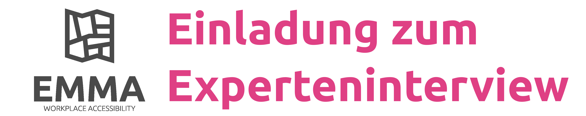

Arbeitsstandorte haben das Potenzial, das Mobilitätsverhalten der Beschäftigten am Standort zu prägen. Das birgt Risiken, aber auch große Chancen für die Stärkung nachhaltiger Mobilitätsoptionen für den Weg zur Arbeit.
Im Rahmen unseres Forschungsprojekts EMMA - Ein multi- und intermodales Erreichbarkeitsmodell für Arbeitsstandorte beschäftigen wir, der Lehrstuhl für Siedlungsstruktur und Verkehrsplanung der TUM (Prof. Wulfhorst), uns damit, wie sich die Erreichbarkeit von Arbeitsstandorten erfassen und bewerten lässt. Ganz konkret: wie viele potenzielle Beschäftigte können einen (potenziellen) Standort z.B. innerhalb von 30 Minuten mit verschiedenen Verkehrsmitteln erreichen? Hierfür haben wir ein Modell entwickelt und auf die Metropolregion München, sowie auf einzelne konkrete Standorte angewendet.
Nun geht es uns darum, im Rahmen von Experteninterviews mit Fachleuten aus dem Bereich Stadtplanung, Verkehrsplanung und Standortentwicklung darüber zu sprechen, welche Relevanz die Methode und die Ergebnisse in der Praxis haben.
Haben wir Ihr Interesse geweckt? Melden Sie sich gerne direkt bei Maximilian Pfertner.